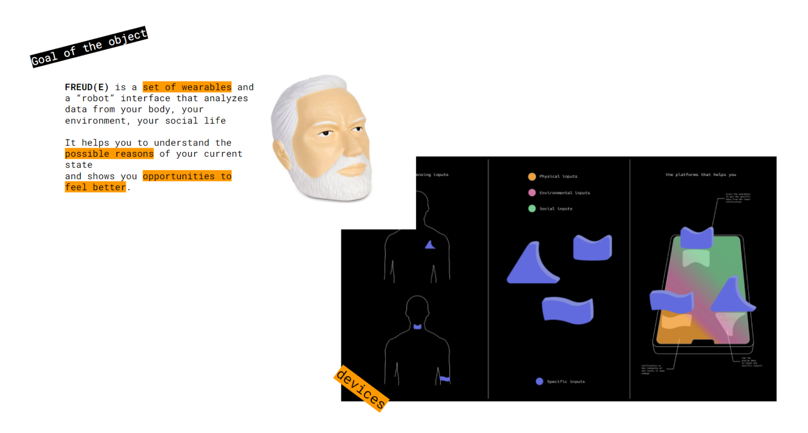

The second week of the seminar continued with a dive in the history of Artificial Intelligence. It was also the occasion to discuss the ethics of AI and all the possible bias that we need to take into consideration from the begining of each project.
animistic design Ramon and Lucas also did a focus on Animistic Design which was inspiring. The term was coined by interaction designer Philip van Allen and promotes a different vision of design : instead of solving a problem, create a system that helps others to solve it.
The idea is to create a system that drives you to be more creative. I felt that I connected a lot with this vision of design and problem solving so I would be interested to explore more around that topic.
This vision of design advocates against "human centered design" and rather propose to create ecosystems where humans and devices can have new and richer interactions not reduced to a device that executes tasks for humans.
